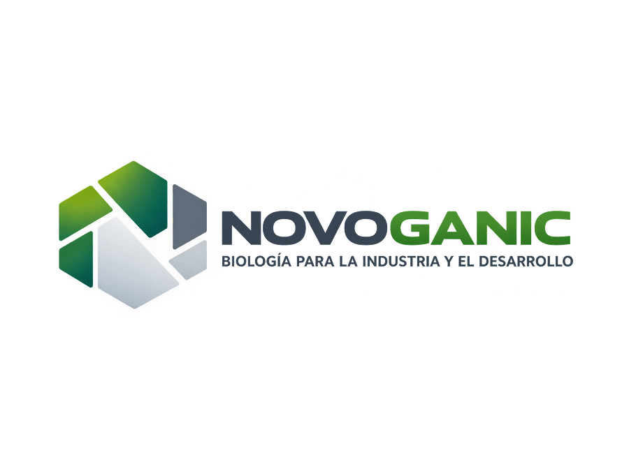

Alimentos
Desarrollo y producción de productos alimentarios.

NovoganicBIOLOGÍA · CIENCIA · INDUSTRIA
Desarrollamos soluciones basadas en la biología para alimentos, salud, limpieza e higiene y biomateriales.
ExplorarNOVOGANIC
Integramos actividades dedicadas al desarrollo y producción de alimentos, soluciones para la salud, productos de limpieza e higiene y biomateriales.
ÁMBITOS DE ACTIVIDAD
Desarrollo y producción de productos alimentarios.
Soluciones y productos para aplicaciones relacionadas con la salud.
Productos para aplicaciones de limpieza e higiene.
Materiales y soluciones basados en recursos biológicos.
CONTACTO
Próximamente, información de contacto de Novoganic.